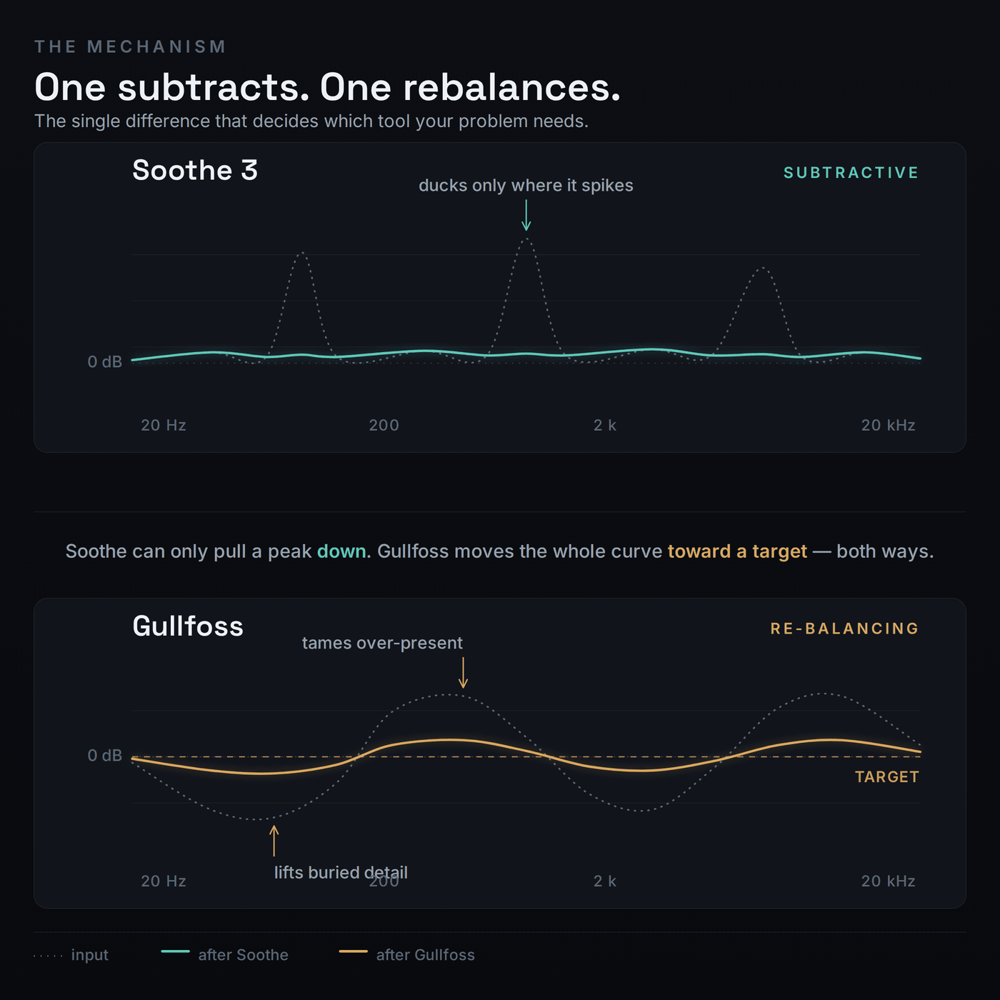
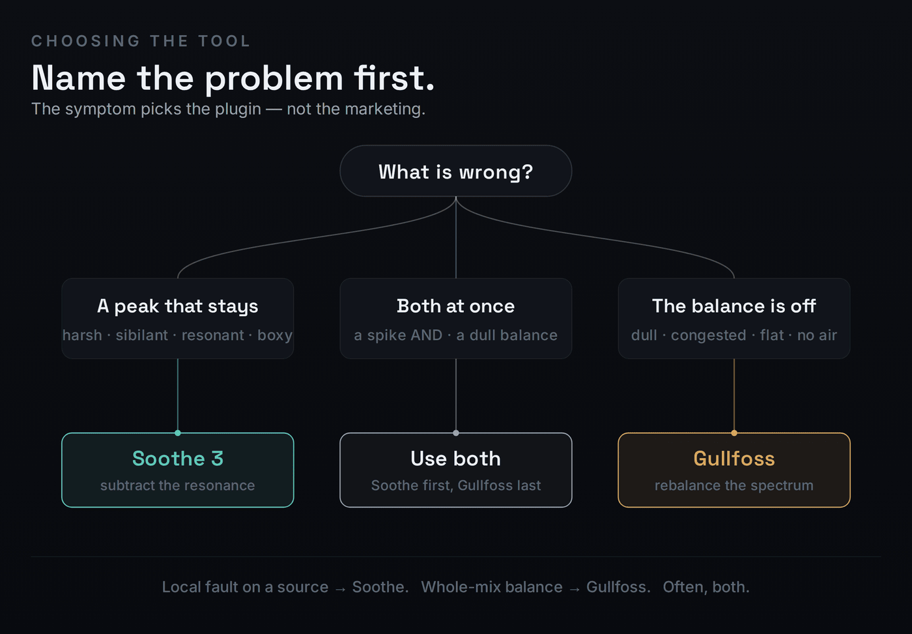
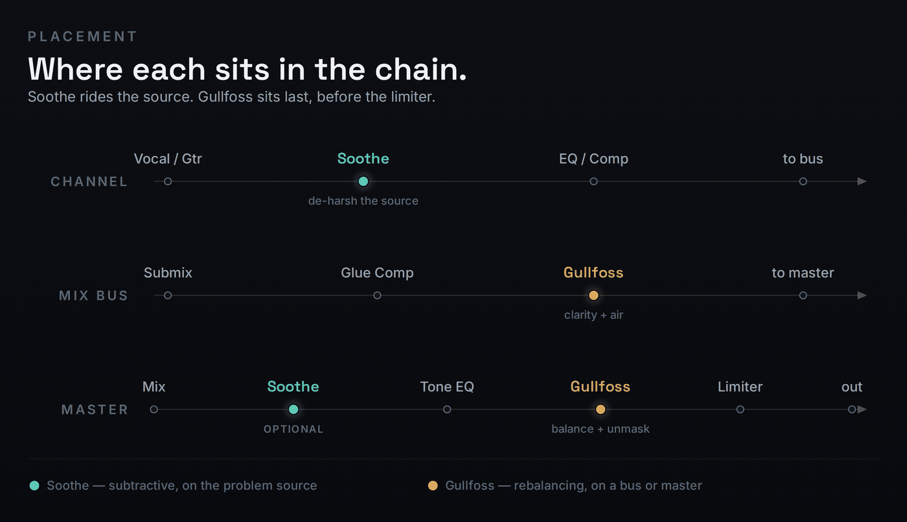

Search “Soothe 3 vs Gullfoss” and you will find two kinds of pages: the makers selling their own plugin, and lesson channels selling a course. Almost none of them tell you the one thing that actually ends the decision — these are not rivals. They do opposite jobs. Soothe 3 subtracts: it is a dynamic resonance suppressor that finds harsh, ringing frequencies and ducks them, and it can only ever cut. Gullfoss rebalances: it is an automatic perceptual EQ that both boosts and cuts to push your whole spectrum toward an ideal balance. If your problem is a peak that jumps out and stays, you want Soothe. If your problem is a dull, congested, or unbalanced mix, you want Gullfoss. Most engineers who can afford it own both and run them at opposite ends of the same chain. The rest of this page is how to know which problem you actually have, with starting settings, a chain order, and an honest answer to “do I need both?”
Buy Soothe 3 ($259) when your recurring problem is harshness, sibilance, or a resonant ring on individual sources — it carves the offending frequency down and nothing else. Buy Gullfoss ($199, three editions in one licence) when your recurring problem is a dull or unbalanced mix bus or master that needs clarity and air — it lifts what is buried and tames what is loud. They overlap maybe 15%. If budget forces one, pick by the problem you fix most often.
The mechanism: subtract vs rebalance
The reason these two tools get cross-shopped is that both make a harsh, cluttered source sound cleaner. The reason they should not be treated as interchangeable is that they arrive at “cleaner” by completely different routes — and that route determines which one will actually solve your specific problem.
Soothe 3 is a dynamic resonance suppressor, and it is subtractive only. It analyses the incoming signal moment by moment, identifies the frequencies that are spiking above their neighbours — a resonant ring, a harsh consonant, a honking midrange node — and applies a matching, momentary dip exactly there. When the offending frequency stops ringing, the dip releases and the processing gets out of the way. That “follows the audio” behaviour is the entire point: a static EQ notch sits at one frequency forever, cutting even when nothing is wrong, while Soothe only acts when and where the resonance is actually present. Crucially, it never adds. Soothe cannot make something brighter, fuller, or louder in any band; it can only take away the part that was too much. If you want a deeper treatment of how this works under the hood, our Bible entry on dynamic EQ and the entry on resonance cover the mechanism without the marketing.
It is worth killing two common confusions here, because they send people to the wrong tool. Soothe is not a de-esser. A de-esser targets a fixed sibilance band — usually 5–10 kHz — and ducks it whenever energy there crosses a threshold. Soothe is broadband and adaptive: it will catch sibilance, but it will equally catch a 350 Hz boxy honk or a 2 kHz nasal ring that a de-esser never touches. And Soothe is not a static EQ. The difference is the word “moving.” A sustained organ note sitting on one frequency is a static problem a parametric cut handles fine; a vocal whose harshness lives on a different note in every line is a moving problem, and a fixed notch either under-treats the loud words or guts the quiet ones. Soothe exists for the moving case, which is exactly where a normal EQ fails.

Soothe 3, released in May 2026, rebuilt that engine from the ground up. The two processing modes carried over from Soothe 2 are now meaningfully different from each other. Soft mode uses an adaptive threshold that is almost completely level-independent — it reacts to the shape of the resonance rather than how loud the source is, which makes it the safe, transparent starting point on vocals and dynamic instruments. Hard mode keeps the old fixed-threshold behaviour: it reacts to input level and grabs more aggressively, which is what you want for forceful ducking and the compressor-like creative effect producers leaned on in Soothe 2. The new Detail control folds the old Sharpness and Selectivity into one knob, a low-latency mode adds zero samples at base sample rates so you can finally run it while tracking, and multichannel support extends it to immersive formats. The headline, though, is simply that the new algorithm is more transparent at the same depth than version 2 was.
Gullfoss is an automatic, perceptual EQ, and it both boosts and cuts. Instead of hunting individual resonances, it runs your audio through a computational model of human hearing — built by mathematical physicist Andreas Tell — and continuously reshapes the entire frequency response toward what that model judges to be a clearer, better-balanced spectrum. It does this with two macro controls. Recover brings up detail that is being masked or buried; Tame pulls down areas that are too dominant or harsh. (Three more controls — Bias, Brighten, and Boost — fine-tune the result, and Soundtheory themselves warn that Recover and Tame values above 100 are usually too high.) Because Gullfoss can raise a region as well as lower it, it can make a mix audibly brighter, fuller, and more three-dimensional — something Soothe is structurally incapable of doing. That single capability, boosting, is the cleanest way to remember the divide: Soothe removes what is wrong, Gullfoss improves what is there.
What the perceptual model is actually optimising matters more than the marketing number you will see quoted about how many times per second it adjusts. Gullfoss is not chasing raw level; it is chasing apparent balance — how loud and clear each region sounds to a human ear once masking is accounted for. Frequency masking is the key idea: a strong frequency hides a weaker neighbour, so detail that is physically present can be perceptually buried. Recover’s job is to surface that buried detail; Tame’s job is to stop a dominant region from doing the masking in the first place. Because the decisions are made on a model of hearing rather than a fixed curve, two different mixes fed identical Recover and Tame settings can be reshaped quite differently — the plugin is responding to what each one needs, not applying a stamp.
This is also why the comparison is so persistent and so misleading. Both tools touch the frequency balance and both reduce harshness, so on a quick demo they can sound like they are doing the same thing. But a static EQ matched to Gullfoss’s average curve would not follow a moving resonance the way Soothe does, and a stack of Soothe instances could never add the air and unmasking that Gullfoss provides. They are answering different questions: Soothe asks “what is sticking out right now?”, Gullfoss asks “is this whole spectrum balanced the way a listener wants it?”
Which one for which job
The fastest way to choose is to name the problem first and let the problem pick the tool. Harshness, sibilance, and resonant ringing are local faults — a specific frequency misbehaving on a specific source — and they are Soothe’s territory. Dullness, congestion, and an overall lack of clarity or air are global faults — the whole balance is off — and they are Gullfoss’s territory. The decision tree below is the same logic in one glance, including the case where both are true.

Walk through the common cases. A harsh vocal — a 3–6 kHz edge that bites on the loud lines but is fine on the soft ones — is the textbook Soothe job: it ducks the edge only when it spikes and leaves the rest of the take untouched. A static de-esser or EQ cut would dull every word; Soothe keeps the brightness and removes only the bite. For the broader vocal workflow, our guide to EQ’ing vocals shows where this fits alongside corrective and tonal EQ. A boxy acoustic guitar with a 200–400 Hz honk that comes and goes with the player’s dynamics is the same shape of problem — moving, resonant, source-specific — and the same answer.
Two more sources land squarely in Soothe’s column and are worth naming because producers often reach for the wrong fix. Harsh, spitty cymbals and overheads — the 6–10 kHz spray that turns into ear fatigue over a loud chorus — are a moving problem, not a static one, so a fixed shelf cut dulls the whole kit while Soothe in Soft mode catches only the spray as it spikes and leaves the body of the cymbal intact — a cleaner result than the broad moves in a general drum EQ approach. And a dense electronic source — a supersaw stack, a distorted bass, a sample layer where several harsh nodes fight at once — is where the rebuilt v3 algorithm earns its price, because it tracks multiple moving resonances simultaneously instead of forcing you to notch each one by hand. Start low on Depth in both cases and raise it only until the fatigue lifts; the temptation to over-treat is strongest exactly where the source is busiest, and that is where over-Soothing does the most damage.
One case sits on the fence and is worth handling carefully: a harsh top end on a full bus or master — spitty cymbals, an aggressive air band, a mix that fatigues after a minute. The instinct is to reach for Gullfoss because it is on the bus, but if the harshness is a defined band rather than a balance problem, a light touch of Soothe on that bus will fix it more cleanly than asking Gullfoss to rebalance around it. The caution is dose: Soothe across a full mix is powerful, and pushed hard it flattens the life out of the top. Treat it as a scalpel even on a bus — small Depth, Soft mode, and stop the instant the fatigue lifts. If the harshness is genuinely everywhere and tied to the overall balance, then it is a Gullfoss problem after all. Diagnosing which is the real skill.
Now the other column. A dull, congested mix bus where nothing is obviously wrong but the whole thing sounds flat and crowded is exactly what Gullfoss exists for: a little Recover unmasks the detail that the dense arrangement is hiding, and the result reads as clarity rather than as an EQ move. A master that needs air and dimension — close, but not quite open at the top — is a Gullfoss job too, because adding that openness requires boosting, which Soothe simply cannot do. Trying to fix a dull master with Soothe is a category error; there is no resonance to remove, so it has nothing to grab.
Both tools have a recognisable failure mode, and learning to hear them is what separates a useful move from a damaging one. Over-Soothing sounds dull, lifeless, and slightly pumped — you have ducked so much that the source loses its character and you can hear the suppression breathing on transients. The fix is almost always less Depth and Soft mode rather than Hard. Over-Gullfossing sounds the opposite: clinically balanced, weirdly uniform, stripped of the intentional emphasis that gave the mix personality. That is what happens when Recover and Tame go past 100 and the perceptual model overrides choices you made on purpose. In both cases the cure is restraint: these are finishing tools, and the best settings are usually smaller than they feel in the moment.
The table below scores each tool per use case on a ten-point scale. These are not head-to-head “winner” numbers — each plugin is rated on how well it solves that specific problem, which is the only honest way to compare tools built for different jobs. Every gap is defended in the prose around it.
| Your problem | Soothe 3 | Gullfoss | Why the gap |
|---|---|---|---|
| Harsh / sibilant vocal | 9.3 | 7.4 | Soothe ducks the moving edge only; Gullfoss tames broadly but is not surgical. |
| Resonant ring on a source | 9.4 | 6.9 | A single ringing node is precisely what Soothe hunts; Gullfoss treats the region, not the node. |
| Boxy / honky guitar | 9.0 | 7.1 | Source-specific, dynamic resonance — Soothe’s home turf. |
| Dull, congested mix bus | 6.6 | 9.1 | Needs unmasking and lift, which requires boosting — Soothe cannot boost. |
| Master needs clarity / air | 6.4 | 9.0 | Air is added, not subtracted; Gullfoss’s perceptual lift is built for it. |
| Final-master harshness fix | 8.8 | 7.6 | A specific harsh band on a master is still a Soothe job; Gullfoss softens it as a side effect. |
Read the numbers as a map, not a ranking. Soothe’s 9.3 on a harsh vocal and Gullfoss’s 9.1 on a dull bus are not competing scores — they describe two different rooms. The only place the two genuinely overlap is the final-master harshness fix, where Soothe’s 8.8 edges Gullfoss’s 7.6 because a defined harsh band is still a surgical problem, but Gullfoss is close because its Tame side will soften that band on its way to balancing everything else. For the wider context of where each sits among EQ tools, our roundup of the best EQ plugins places both alongside the manual options.
The verdict: best-for, not a winner
There is no single winner here, and any page that hands you one is selling something. The honest verdict is two verdicts — one per tool, each judged on the job it was built for. Buy by your most common problem; if both problems are common in your work, that is your signal that you will eventually own both.
Best for Surgical, dynamic problems on individual sources — harsh vocals, sibilance, resonant rings, boxy instruments, and defined harshness on a master.
Watch out It only subtracts. It will never add clarity, air, or balance — ask it to fix a dull mix and it has nothing to grab.
Verdict The best dynamic resonance suppressor you can buy, and the rebuilt v3 algorithm is its most transparent version yet.
Best for Whole-balance problems on a bus or master — dull, congested, or flat mixes that need clarity, unmasking, and air, delivered in two knobs.
Watch out It is broadband and automatic. It will not surgically remove one ringing frequency, and pushed too hard it can over-balance — keep Recover and Tame under 100.
Verdict The most transparent automatic rebalancer in the category, and the one licence quietly includes three editions for tracking, mixing, and mastering.
Where they sit among the alternatives
Soothe and Gullfoss are not the only tools in this conversation, and pretending they are leaves money on the table — especially if you already own a capable EQ. The field below frames five tools by the job each is actually for, with prices verified against each maker in June 2026. The point is not to crown a winner; it is to show that some of these jobs you may already be able to do.
| Tool | Price | What it is | The job it is for |
|---|---|---|---|
| Soothe 3 | $259 | Dynamic resonance suppressor (cut-only) | Surgically duck moving harshness on a source |
| Gullfoss | $199 | Automatic perceptual EQ (boost + cut) | Rebalance and unmask a whole bus or master |
| FabFilter Pro-Q 4 | $179 | Parametric EQ with dynamic + spectral modes | Manual, surgical control — the “do I already own this?” question |
| TDR Nova | Free | Manual dynamic EQ, four bands | Tame a known problem frequency on zero budget |
| Baby Audio Smooth Operator | ~$99 | Spectral balancer / resonance shaper | Cheaper, more creative take on resonance suppression |
The most important row is FabFilter Pro-Q 4. Its Spectral Dynamics mode triggers per-frequency within a band, so it covers a real slice of what Soothe does — manually. If you already own it and your resonance problems are occasional, you may not need Soothe at all; you set the band yourself instead of letting an algorithm find it. But Pro-Q 4 is manual where Soothe is adaptive, and even its own reviewers concede it will not replace Soothe or Gullfoss for hands-off resonance suppression. Our EQ guide walks through when manual control is worth the extra time. At the free end, TDR Nova gives you four bands of manual dynamic EQ — enough to tame a frequency you can already name, but you do the detective work yourself. And Baby Audio’s Smooth Operator sits between them: cheaper than Soothe, more creative than corrective, and a genuine option if budget is the constraint. The distinction between dynamic EQ and the broadband approach is covered in depth in dynamic EQ vs multiband compression.
There is also a learning argument for starting at the manual end, and it is not only about money. Working a resonance by hand in TDR Nova, or in a sub-$60 dynamic EQ like TB DSEQ3, forces you to find the offending frequency yourself, set the threshold, and hear the ducking engage — the exact listening skill that makes you faster and more restrained once you do own Soothe. Producers who jump straight to the automatic tools often lean on them too hard, pushing Depth or Recover past the point of transparency because they never trained the ear that says “that is enough.” If the budget is tight this quarter, a free or cheap manual tool is not just a stopgap; it is the apprenticeship that makes the expensive tool pay off when you finally buy it.
Do you actually need both?
Here is the honest answer the seller-blogs avoid: no single tool here replaces the other, and for most working mixers the real overlap is only around 15%. That overlap is the small zone where a harsh, defined band on a bus or master could be handled either by Soothe ducking it or by Gullfoss taming it on the way to balancing everything. Outside that zone they do not substitute. Soothe cannot add the air a dull master needs; Gullfoss cannot surgically erase one ringing frequency without touching its neighbours. If your work regularly produces both kinds of problem — and most full mixes do — owning both is not redundant, it is the normal professional setup.
Make it concrete with a typical vocal-led pop mix. The lead vocal bites at 4 kHz on the belted lines but is fine in the verses — a moving resonance, so Soothe on the vocal channel ducks the bite without dulling the soft parts. Meanwhile the full mix bus sounds crowded and a little flat: the layered synths and doubled vocals are masking each other, and no single frequency is the culprit — so Gullfoss on the bus unmasks the detail and opens it up. Neither tool could have done the other’s job. Soothe on the bus would not have added the clarity, and Gullfoss on the vocal would not have surgically caught that 4 kHz belt. That is the 85% of the time they are not interchangeable, in one mix.
But plenty of producers should not buy both, at least not yet. If you mix mostly individual sources — vocals, sampled instruments, dense electronic stems — and your complaint is always “this is harsh,” Soothe alone will earn its keep and Gullfoss will sit unused. If you mostly finish other people’s mixes on a bus or master and your complaint is always “this is dull and crowded,” Gullfoss alone is the buy, and at $199 with three editions it is the better value of the two. The test is simple: over your last ten sessions, was the recurring fault more often a sticking-out peak or a flat overall balance? Buy for the fault you actually keep hitting.
One more honesty check before you spend: if you already own a strong dynamic EQ like Pro-Q 4, your minimum-viable setup might be that EQ for the occasional named resonance plus Gullfoss for whole-mix clarity — covering both columns without buying Soothe. You trade Soothe’s hands-off speed for manual effort, which is a fair deal for a hobby budget and a poor one for a high-volume professional. There is no universally correct answer; there is only the answer that matches how often you hit each problem.
If you are genuinely torn, let the trials decide rather than the spec sheet. Soothe 3 has a 20-day trial and Gullfoss a 14-day one, which is more than enough to run each on the work you actually make. Take three recent problem mixes, put Soothe on the sources that bug you and Gullfoss on the bus, and watch which plugin you keep reaching for and which one sits there unused. The tool you instinctively grab on real sessions — not the one that demos most dramatically on a cherry-picked clip — is the one to buy first. Vendor demos are built to flatter; your own stuck mixes tell the truth. This is also the cheapest way to discover that you need both, before you have spent a cent on either.
How to chain them correctly
When you do own both, the order is not arbitrary. Soothe goes first, on the source or early on a bus; Gullfoss goes last, on the bus or master before the final limiter. The logic is causal: you clean the problem before you ask an automatic EQ to judge the balance. If Gullfoss sees a harsh resonance still in the signal, its perceptual model will react to that distortion of the spectrum and balance around it, producing a slightly compromised result. Remove the resonance with Soothe first, and Gullfoss gets a clean spectrum to optimise, so its rebalancing lands where you want it.
The mistake that quietly degrades a lot of masters is the reverse order — Gullfoss first, Soothe after, or Soothe omitted while Gullfoss is asked to deal with an obvious resonance. When Gullfoss balances a spectrum that still contains a harsh ring, it reads that ring as part of the tonal picture and shapes everything around it; you then place Soothe afterward to remove the ring, and the balance Gullfoss just set is no longer correct because the thing it balanced around is gone. The result is subtly off in a way that is hard to pin down. Get the causality right and the problem disappears: subtract the fault, then judge the balance. The same logic is why you do not put Gullfoss after the limiter — it needs the un-squashed dynamics to judge anything at all.

On an individual channel, Soothe lives near the front of the chain, before your tonal EQ and compression, so everything downstream works on a signal that no longer has the harsh spike fighting it. On a mix bus, the usual move is glue compression first, then Gullfoss to add clarity and air to the glued submix — and only a light, optional touch of Soothe if the whole bus carries a collective harshness, a job where restraint matters most because Soothe across a full mix can dull it if pushed. On a master, the placement that consistently works is: optional Soothe to remove any defined harsh band, then your tonal or character EQ, then Gullfoss to balance and unmask, then the limiter. The non-negotiable rule on a master is that Gullfoss belongs before the final limiter — it needs to judge and reshape the dynamic spectrum before that spectrum gets squashed to its final loudness. For the full mastering context, see the best plugins for mastering and our guide to mastering for streaming.
Two refinements separate a clean chain from a merely correct one. First, gain-match before you judge: Gullfoss can lift perceived loudness as it rebalances, and louder almost always sounds better for the wrong reasons, so pull its output or your monitor level back to match the bypassed signal before you decide it helped. Second, consider running Soothe in parallel on the hardest sources — its Mix control lets you blend the suppressed signal back with the untouched one, so you remove the harsh edge while keeping the body and energy that full-wet suppression can flatten. Parallel de-harshing is the move when a vocal is both harsh and thin: full Soothe fixes the bite but kills the life, while a fifty-percent Mix keeps both. Neither refinement costs a thing, and both are the difference an experienced ear hears immediately.
If you would rather diagnose before you process, MPW’s free EQ Problem Solver and Frequency Conflict Detector will help you name the offending region first — which is exactly the information that tells you whether the fix is a Soothe job or a Gullfoss job. And if you are still shaky on what a resonance or a masked frequency even is, the Bible entries on frequency masking and parametric EQ are the grounding to read first.
Pricing reality, June 2026
Soothe 3 is $259 (€229 / £199), with a $55 upgrade from Soothe 2. The launch grace period that gave recent Soothe 2 buyers a free upgrade has closed, so do not buy a second-hand v2 licence expecting it — price the upgrade at $55 if you already own version 2, or $259 fresh. There is a 20-day trial, which is the right way to confirm it solves your problem before committing.
Gullfoss is $199, and the detail that quietly changes the value calculation is that the single licence includes all three editions: Gullfoss for mixing and most mastering, Gullfoss Live for low-latency tracking, and Gullfoss Master for the finest mastering increments and the lowest noise floor. The plugins are not sold individually, and every previous purchaser gets the full trilogy free. A 14-day trial is available. You will see old coupon codes floating around search results promising 30% off — those were 2021 promotions and are dead; the current price is $199 with no standing sale, so verify on Soundtheory’s own shop before paying anyone else.
On pure price the gap is small — $60 — and it should not drive the decision, because they are not substitutes. The right way to read the prices is per job: $259 buys the best surgical resonance suppressor; $199 buys the best automatic rebalancer plus two bonus editions. If you can only fund one this quarter, the deciding question is still the same one this whole page comes back to — which problem do you keep hitting? — not which costs less.
One practical cost the price comparison rarely mentions is CPU and latency, and it can tip a decision on a loaded session. Soothe is moderately heavy and its standard mode adds latency, but its low-latency mode drops to effectively zero added samples at base sample rates, which is what makes it usable while tracking. Gullfoss is comparatively light in its standard edition, while the Gullfoss Master edition trades higher CPU for finer resolution and a lower noise floor — fine on a two-track master, less so spread across thirty live instances. If you run either across a large template, factor it in: Soothe instanced on every channel adds up far faster than a single Gullfoss on the bus, which is one more quiet argument for using Soothe surgically rather than everywhere.
Try it yourself: 3 exercises
- Load Soothe 3 on a lead vocal that bites on the loud lines. Set it to Soft mode for transparent, level-independent suppression.
- Raise Depth slowly while the loud section plays until the harsh edge eases — stop the moment the brightness starts to dull.
- Use the Delta / listen-to-the-cut function to hear exactly what is being removed. You should hear only the harsh spikes, not the body of the voice.
- Bypass and compare. The soft lines should sound untouched; only the spikes should be tamed. That “only when needed” behaviour is the whole reason to reach for Soothe over a static cut.
- Insert Gullfoss on a dull, congested mix bus — not a single track. Start with both Recover and Tame at zero.
- Bring Recover up to around 20–30 and listen for buried detail surfacing. Then add a little Tame to pull back anything that now sounds too forward.
- Keep both values under 100 — Soundtheory’s own guidance is that higher is almost always too much.
- A/B against the bypassed bus. The processed version should sound clearer and more open without sounding obviously EQ’d — that transparency is the signature of a perceptual rebalancer doing its job.
- On a finished mix, place Soothe first to remove any defined harsh band, then Gullfoss last (before your limiter) to balance and unmask. Note how much cleaner Gullfoss’s result is when it receives a de-harshed signal.
- Now try to recreate the chain with a single Pro-Q 4 instance: a dynamic band on the harsh frequency, plus static moves toward the balance you want.
- Compare time spent and result. Where did the manual EQ get you close? Where did the adaptive pair clearly win?
- This is the real “do I need both?” test — run on your own material, the answer stops being abstract.
Frequently asked questions
No — they do different jobs. Soothe 3 only subtracts: it ducks specific harsh, moving resonances on a source. Gullfoss boosts and cuts to rebalance a whole bus or master, which Soothe structurally cannot do because it never adds. Neither replaces the other; they overlap only about 15%, on defined harshness near the end of a chain.
For $55, usually yes if you use Soothe often. The v3 algorithm is rebuilt to be more transparent at the same depth, Soft and Hard modes are now genuinely distinct, the new Detail control simplifies tweaking, and low-latency mode finally lets you run it while tracking. If you only reach for it occasionally, version 2 still works fine and there is no urgency. Our full Soothe 3 review covers the upgrade case in detail.
Partly, and manually. Pro-Q 4’s Spectral Dynamics mode triggers per-frequency within a band, covering a slice of Soothe’s job — but you set the band yourself, where Soothe finds and follows the resonance automatically. For occasional, named resonances on a budget, Pro-Q 4 can suffice; for hands-off suppression across a whole take, even FabFilter’s own reviewers say it will not replace Soothe.
Soothe usually goes early — before tonal EQ and compression on a channel — so downstream processing works on a signal without the harsh spike fighting it. Gullfoss goes later: on a bus, after glue compression; on a master, after tonal EQ and always before the final limiter, so it can judge and reshape the spectrum before it is squashed to final loudness.
For overall master balance, clarity, and air, Gullfoss — and the $199 licence even includes a dedicated Gullfoss Master edition with finer increments and a lower noise floor. Soothe is the mastering pick only for one narrower job: removing a specific harsh or resonant band without touching the rest. Many mastering engineers run both, Soothe to fix and Gullfoss to finish, before the limiter.
Yes. One $199 purchase downloads Gullfoss (mixing), Gullfoss Live (low-latency tracking), and Gullfoss Master (mastering) — the “trilogy.” They are not sold separately, and anyone who previously bought Gullfoss gets all three free. That bundle is a real part of the value when you compare the headline prices.
Soothe processes the signal it is fed and supports multichannel formats, but its core action is frequency-domain resonance suppression, not stereo widening or narrowing. If you apply it per-channel or to a stereo source, it ducks resonances where they occur; it is not a stereo-imaging tool and should not be reached for to widen or narrow a mix.
Yes. For resonance suppression, TDR Nova (free, manual) and Baby Audio Smooth Operator (~$99) cover much of Soothe’s ground if you accept more hands-on work. There is no true free equivalent of Gullfoss’s automatic perceptual rebalancing, but a capable manual EQ used carefully toward a reference can approximate the result with effort. See our best EQ plugins roundup for the full field.
The short version: Soothe removes what is wrong; Gullfoss improves what is there. Name your most common problem, buy for that, and chain Soothe first and Gullfoss last when you eventually own both. For the solo deep-dives, read our Soothe 3 review and Gullfoss review — this page is the cross-shop decision; those judge each tool on its own.